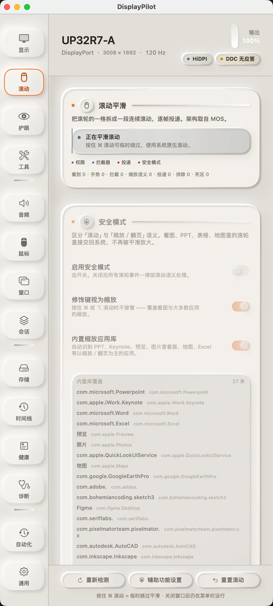

01 · 丝滑滚动
一格滚轮，拆成一段
滚轮的一格不再是一次跳变。事件先被攒起来，再挂在屏幕刷新上逐帧投递，每帧投出 pending × (1 − e^(−dt/τ))。因为按时间衰减、不按帧数，60Hz 与 144Hz 的手感一致：离线基准里，120Hz 的首帧从 3 点提到 9 点，90% 用时从 158ms 缩到 133ms。
终端、看图、PPT 这类把滚轮当精确输入或缩放的窗口默认交回系统；按住 ⌘ 随时回到原生滚动；平滑默认关闭，不打开就不会接管你的滚轮。界面上留着「看到 / 手势 / 拦截 / 投递」四个实时计数，换了鼠标出问题，一眼看得出卡在哪一层。
